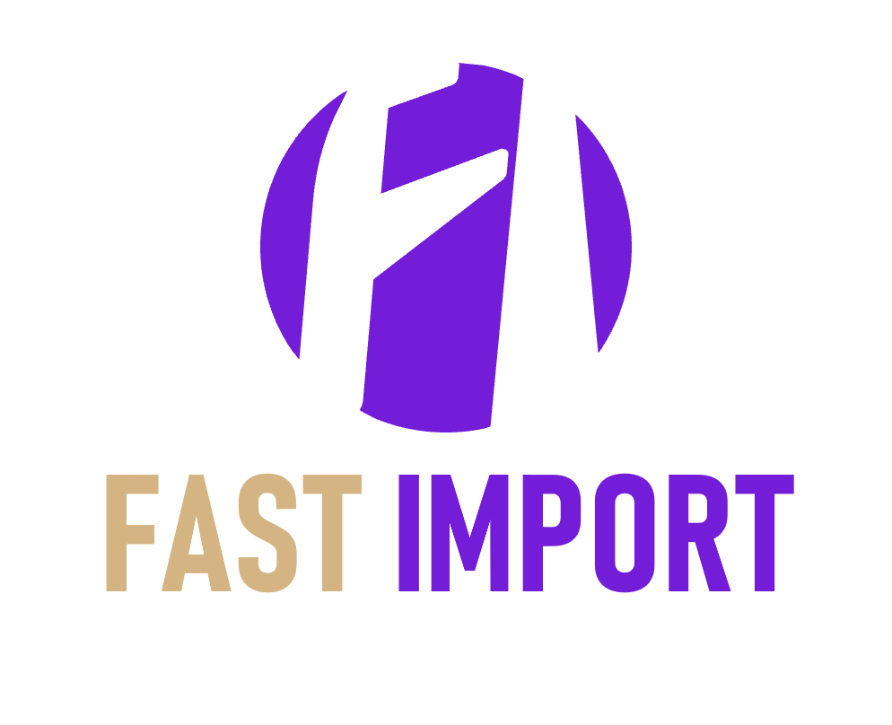

Estamos crescendo?
Receita, ticket médio, base de clientes.
Cada área monta seu próprio Excel e distribui por e-mail. Quando dois relatórios discordam, ninguém sabe em qual confiar — e a decisão volta a ser tomada no olho.
Os mesmos 9 arquivos, tratados uma vez, viram um modelo — arquitetura medalhão, direto de onde os dados moram até a tela do gestor, sem cópia no meio do caminho.
Arquivos crus · limpeza e tipagem · modelo em estrela · consumo sem duplicar dado
Tablets, jan-jul 2020 vs. jan-jul 2021 — enquanto Hardware, Periféricos e Redes seguem estáveis ou positivos no mesmo recorte.
Olhar só o total (-6,58%) esconde isso. Separar por departamento muda a pergunta de "o que está errado com a empresa" pra "o que está acontecendo com Tablets".
de recorrência — todo cliente ativo num ano já comprava nos anteriores.
O crescimento de 2018 a 2020 veio inteiro de vender mais pra quem já é cliente, não de conquistar gente nova. É fidelidade — e também um risco: a empresa nunca testou o próprio motor de aquisição.
As análises pedidas viram cinco páginas — cada uma respondendo a uma pergunta específica de gestão.
Painel executivo com o resumo de tudo.
Receita, ticket médio, base de clientes.
Sempre o mesmo recorte de período.
Por departamento e categoria.
Tendência, não só a média.
Construído em Microsoft Fabric com Direct Lake — sem duplicar dado, pronto pra crescer junto com o negócio.

Rafael Pinto · Case técnico de Business Intelligence